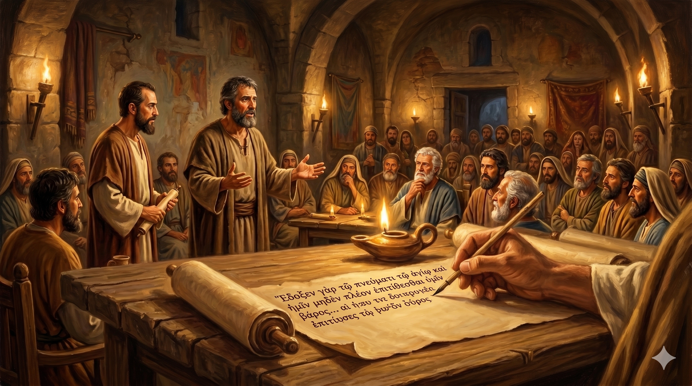

예루살렘 공의회에서 이방인 형제들을 위해 증언하는 바나바와 바울 — 사도들과 장로들이 모인 자리에서 하나님이 이방인 중에 행하신 표적을 담대히 전하는 장면
"바울과 바나바가 그들과 적지 아니한 다툼과 변론이 있은 후에 형제들이 이 문제에 대하여 바울과 바나바와 및 그 중의 몇 사람을 예루살렘에 있는 사도와 장로들에게로 올라가게 하기로 작정하니라 … 예루살렘에 이르러 교회와 사도와 장로들에게 영접을 받고 하나님이 자기들과 함께 계셔 행하신 모든 일을 말하매" — 사도행전 15:2-4
1차 선교여행을 마치고 안디옥으로 돌아온 바나바와 바울에게 심각한 문제가 기다리고 있었습니다. 유대에서 온 어떤 사람들이 "모세의 법대로 할례를 받지 아니하면 능히 구원을 받지 못한다"고 가르치기 시작한 것입니다. 이것은 단순한 신학 논쟁이 아니었습니다. 이방인들이 그리스도 안에서 완전한 하나님의 자녀가 될 수 있는가, 아니면 유대 율법의 틀 안으로 들어와야만 하는가 — 복음의 본질이 걸린 싸움이었습니다. 바나바는 이 싸움에서 주저하지 않았습니다. 바울과 함께 예루살렘으로 올라가 사도들과 장로들 앞에서 증언했습니다.
예루살렘 공의회에서 바나바와 바울은 하나님이 이방인 중에 행하신 표적과 기사를 낱낱이 보고했습니다. 그들의 증언은 단순한 변론이 아니라, 하나님이 이방인들 가운데도 친히 일하셨다는 살아있는 증거였습니다. 베드로 역시 고넬료 사건을 떠올리며 같은 방향으로 증언했고, 야고보는 구약 성경에서 근거를 찾아 이방인들에게 불필요한 짐을 지우지 말 것을 결론지었습니다. 이 공의회의 결정은 오늘날 우리가 누리는 복음의 자유를 가능하게 한 역사적인 순간이었습니다. 바나바는 그 결정적인 자리에 서 있었습니다.

예루살렘 공의회의 결정문 — 이방인 성도들에게 율법의 짐을 지우지 않는다는 선언, 복음의 자유를 보호한 역사적 문서
바나바는 사람을 알아보는 눈과 함께, 진리를 위해 싸울 줄 아는 용기도 가진 사람이었습니다. 위로자는 무조건 부드럽고 모든 것에 동의하는 사람이 아닙니다. 복음의 진리가 흔들릴 때 그는 단호하게 나섰습니다. 우리도 가정에서, 직장에서, 교회에서 진리를 지키기 위해 때로는 목소리를 높여야 할 때가 있습니다. 조용한 사람이 항상 옳은 것이 아닙니다. 바나바처럼, 필요한 순간에 담대히 서는 것도 신앙의 덕목입니다.
바나바와 바울이 예루살렘에서 전한 것은 자신들의 의견이 아니었습니다. 그들은 "하나님이 행하신 일"을 전했습니다. 신학 논쟁에서 가장 강력한 근거는 논리가 아니라 하나님의 실제 역사입니다. 우리도 신앙의 증거를 이야기할 때, 나의 생각이나 이론보다 하나님이 내 삶에서 행하신 구체적인 역사를 나누십시오. 그것이 가장 설득력 있는 복음의 증거입니다.
바나바는 위로의 사람이었지만, 진리 앞에서는 싸울 줄 알았습니다.
복음의 자유는 누군가의 용기 있는 싸움으로 지켜졌습니다.
당신은 오늘 어떤 진리를 위해 서 있습니까?